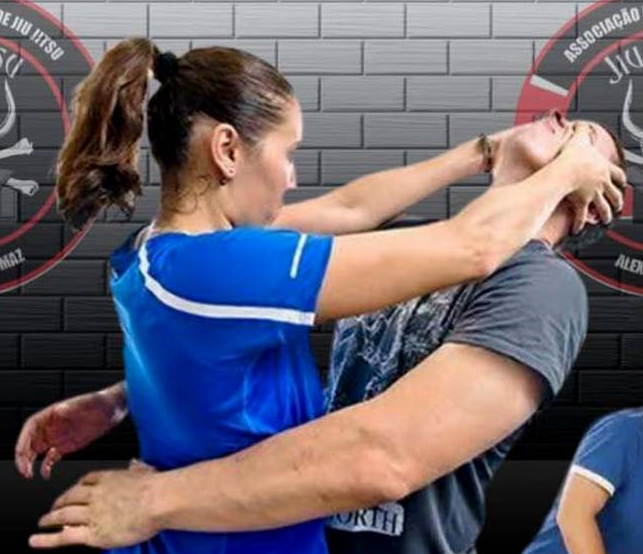

BENEFÍCIOS
O jiujutsu traz diversos benefícios para os praticantes. Faz bem para a saúde como qualquer outro esporte. Porém, seus benefícios vão muito além disso. O corpo e a mente tên vantagens importantes com essa arte. Conheça alguns dos benefícios abaixo.
COMBATE AO ESTRESSE E A ANSIEDADE
O Jiu-Jitsu exige muito condicionamento físico e força. Pórem o aluno tem a possibilidade de progredir no seu ritmo. É um esporte que trabalha com muitos movimentos repetitivos e busca sempre o autocrescimento do praticante para que ele se exija sempre mais.
É por isso que é um grande aliado para combater os sintomas de estresse e ansiedade. Os benefícios podem ser alcançados também por pessoas que tenham diagnóstico de depressão, pois elas se sentem mais confiantes em si mesmas e mais positivas quando praticam.

DISCIPLINA
Como em qualquer outra arte marcial, o Jiu-Jitsu ensina muita disciplina para seus seguidores. Ajuda na abertura para o diálogo, cada um têm algo a ensinar e a aprender, o respeito, o senso de humildade e humanidade sempre andam junto com seus principios. Os valores são aplicados nos treinamentos, como resiliência, pensar sobre pressão e ter capacidade e superação.
É preciso ter persistência e resiliência para aprender os golpes e superar as metas e objetivos. A caminhada é longa e difícil e isso tudo se reflete no aprendizado de disciplina para os praticantes.
DEFESA PESSOAL
Jiu-Jitsu ensina defesa pessoal com técnicas de imobilização e alavancas, o que reduz a diferença de defesa para pessoas mais fracas e vulneráveis. Homens e mulheres aprendem a se defender de ataques de pessoas que possam atacá-las e isso faz com que sintam mais seguras.
É uma prática que utiliza mais a técnica do que força. Seus praticantes conseguem defender de pessoas que tenham pessos e tamanhos maiores do que elas. Procura-se entender a situação e as circunstâncias do eminente perigo na prática. Seja um ataque pessoal,uma possivel queda natural ou um ataque animal por exemplo.
DEFINIÇÃO DO CORPO
As atividades físicas têm como um de seus principais atrativos a transformação do corpo para o práticante, muitos com intenção de redução de peso, outros pela saúde. E isso não é diferente no Jiu-Jitsu. Mesmo não precisando de muita força para ser praticado, é um ótima modalidade para a definição do corpo.
Tudo isso porque alguns golpes e posições precisam da movimentação de vários grupos musculares. Além disso, manter as posições auxiliares na tonificação do corpo.
MOBILIDADE CORPORAL E CONTATO FÍSICO
É um esporte com muito contato físico, e com muitas repetições. De alguns com alguns psicologos, este contato físico desde o começo das aulas, promove muitos ganhos positivos para a mente e o corpo.
Isso porque ao tocar uma outra pessoa, o nosso corpo libera hormônios e substâncias que nos auxiliam a nos sentirmos mais conectados, perceptivos e focados. Sendo assim, ajuda com que os praticantes interajam e se sintam mais conectados aos outros.
Página Inicial..